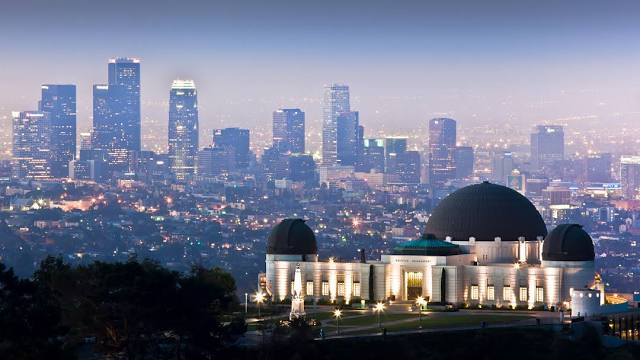
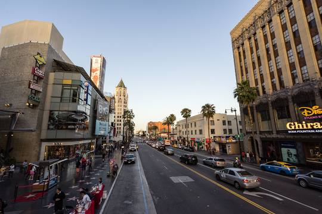

Los Angeles

Los Angeles, the home of Hollywood, the bright lights of Hollywood Boulevard and the hot sun of the West Coast is without a doubt a beautiful vacation and getaway spot for many people, it has a variety of things to do, it is almost near impossible for an individual to become bored when in Los Angeles.
places you can visit in Los Angeles
Griffith Observatory
this observatory near the Hollywood Sign gives someone a beautiful view of Los Angeles from one of the highest points in the city. it is also a place you can visit yourself if it suits your personal taste.
Hollywood Boulevard
Hollywood Boulevard is home to many big places and has a varity of places you can go to, such as exhibits at the Guinenes Museum, Hollywood Museum, Hollywood Wax Musuem respectively, theatres and most importantly, you can walk on the Hollywood Walk Of Fame with stars engraved on the pavement of the great Hollywood stars.
Disneyland
Disneyland is no stranger to fun for individuals, partners, couples, friends and families. Disneyland is the perfect place to head to to unwind and relax on your vacation in LA.
Santa Monica Pier
Santa Monica Pier is home to alot of different activities and also is next to the beach for those that wish to swim in the ocean but if not, then you can indulge yourself in the many activities of the pier for one as the Ferris-Wheel, fishing or the concession stands around the pier.